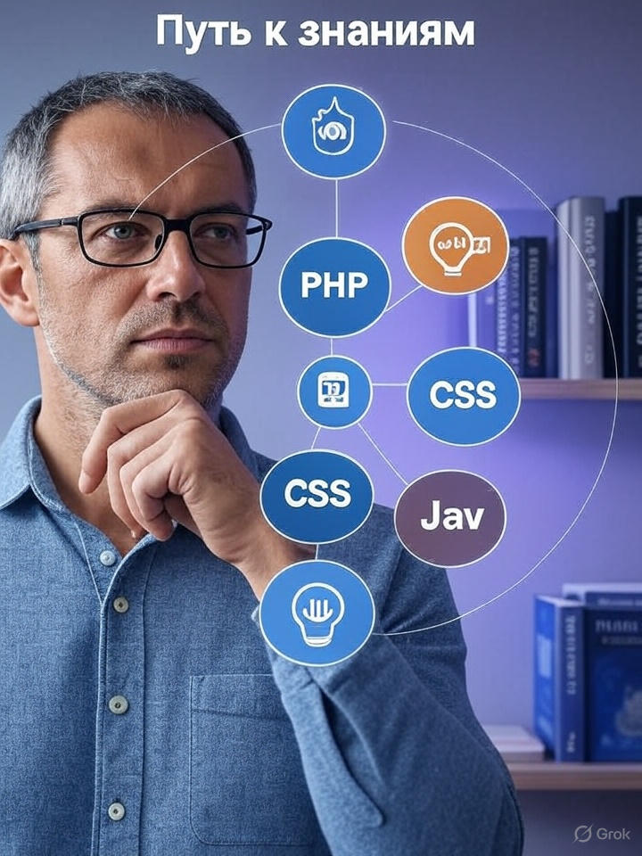
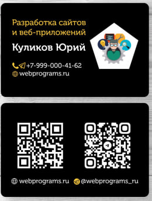

От WordPress к JavaScript

Сегодня во втором посте моего блога я решил поделиться историей о том, как я постепенно прошёл путь от освоения WordPress до изучения JavaScript. Этот путь был долгим и полным интересных этапов, и я с радостью расскажу, как всё начиналось.
Первое знакомство с WordPress
Первое знакомство с WordPress произошло из необходимости. Как и многие в наше время, я столкнулся с ним благодаря профессиональной деятельности. Мой первый опыт предпринимательства потребовал создания сайта, и выбор пал на WordPress. Я начал с использования готовой темы, доступной в платформе, не создавая собственную. Если интересно, могу предоставить ссылку на пример.
Интернет-магазин постельного белья
Позже WordPress стал частью ещё одного проекта — спонтанно возникшего интернет-магазина постельного белья. Этот опыт оказался увлекательным, и, если тема заинтересует читателей, я с удовольствием расскажу подробности. Магазин уже не ограничивался чистым WordPress: я использовал плагин WooCommerce, что позволило организовать полноценную загрузку и выгрузку товаров. Здесь мне удалось успешно интегрировать базы данных, выгружая каталоги из Excel или CSV-файлов и загружая их в WooCommerce. Платформа справилась с этим блестяще. Кроме того, я подключил Яндекс.Кассу и партнёрские программы, что дало мне возможность узнать много нового. Однако я всё чаще замечал, что мне не хватает гибкости. Постоянный поиск плагинов для реализации нужных функций начинал утомлять.
Поиск решений и помощь специалиста
Однажды я обратился за помощью к специалисту. За каких-то десять минут он реализовал необходимый функционал без установки дополнительных плагинов. Правда, был один недостаток: не было гарантии, что настройки сохранятся после очередного обновления WordPress. Это, на мой взгляд, одно из неудобств платформы. Тогда я осознал, что пора углублять знания и учиться самостоятельно.
Путь обучения
В 2015 2020 году мне поступило предложение пройти дистанционные курсы PHP со значительной скидкой в честь дня рождения. Я завершил обучение, но понял, что знаний всё ещё недостаточно. Осваивая PHP, я осознал пробелы в понимании CSS и, например, JavaScript. Без базовых навыков изучение нового материала оказалось затруднительным, и я решил вернуться к началу.
Я начал искать подходящие курсы и приобрёл обучение на Stepik — платформе, о которой, возможно, кто-то слышал. Курс оказался хорош: он постоянно обновляется, предоставляется навсегда и не требует дополнительных платежей. Я периодически возвращался к нему, но ощутимого прогресса не было, пока я не наткнулся на материалы Александра Илясова. Его подача и глубокое знание темы меня вдохновили, и я сразу записался на его курс по JavaScript. Изучая JavaScript, я вновь столкнулся с нехваткой знаний HTML и CSS, что заставило меня вернуться к обучению на Stepik, где всё изучается комплексно.
Круговорот знаний
Такой круговорот знаний продолжается и по сей день. Этот непростой путь позволил мне накопить опыт, который теперь помогает реализовывать проекты в интересах заказчиков. О них я буду рассказывать в своём блоге по мере возможности. Присоединяйтесь к подписчикам и следите за моим видеоканалом — впереди много интересного!
КОНТАКТЫ
